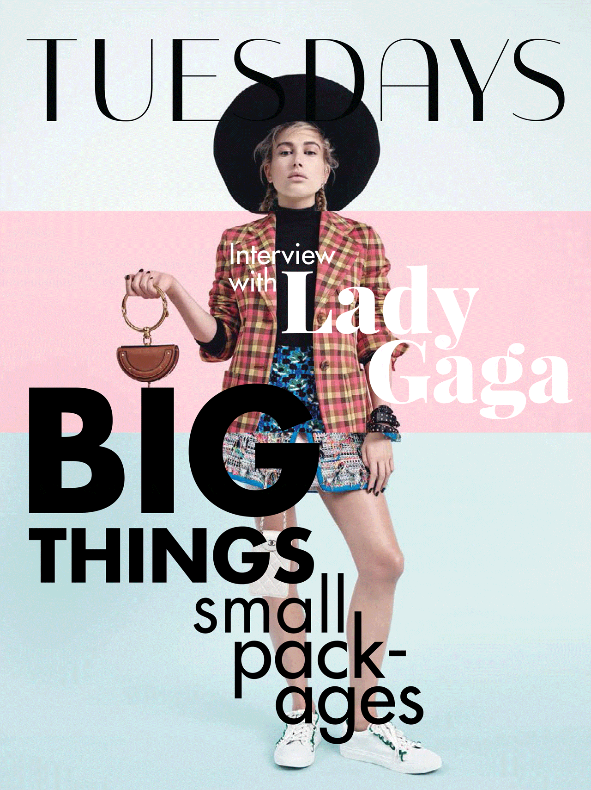
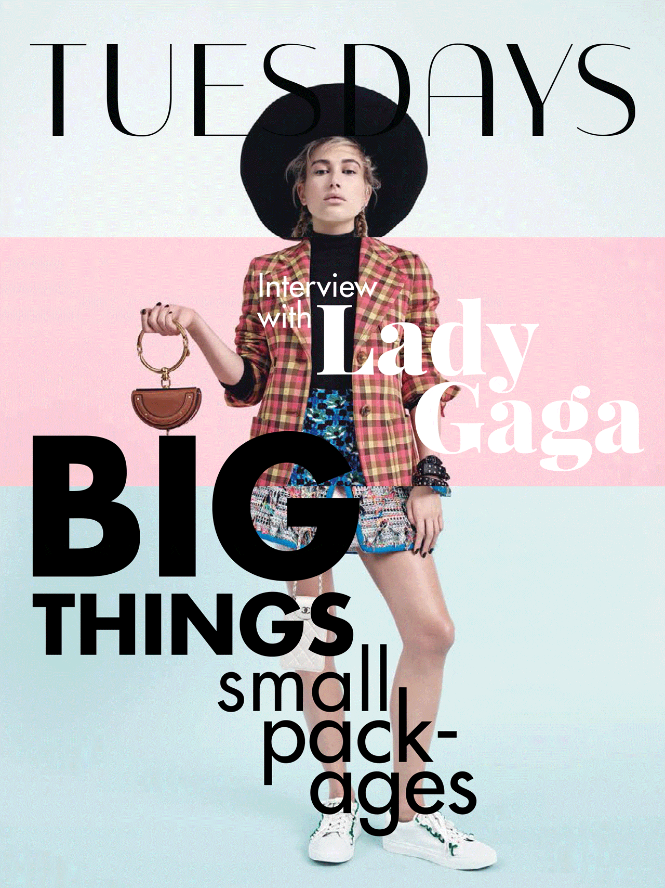

Per realizzare questo magazine, volevo utilizzare un font che fosse in qualche modo legato alla tipografia applicata al mondo della moda, ma anche fresco ed elegante. Ho così scelto il font Italiana, un carattere tipografico che rimanda un po' allo stile Bodoniano, ma in una versione sans serif più moderna e fresca. Successivamente ho poi scelto altri due caratteri tipografici d'accompagnamento. Uno per il titoli, Playfair Display, e uno per il corpo del testo, Futura.
Il magazine digitale è stato anche esteso con un sito web, per cui ho realizzato un sito web responsive.
I software impiegati per la creazione del progetto sono: InDesign, SketchApp e anche Photoshop ed AfterEffect per le animazioni e gifs.
 
